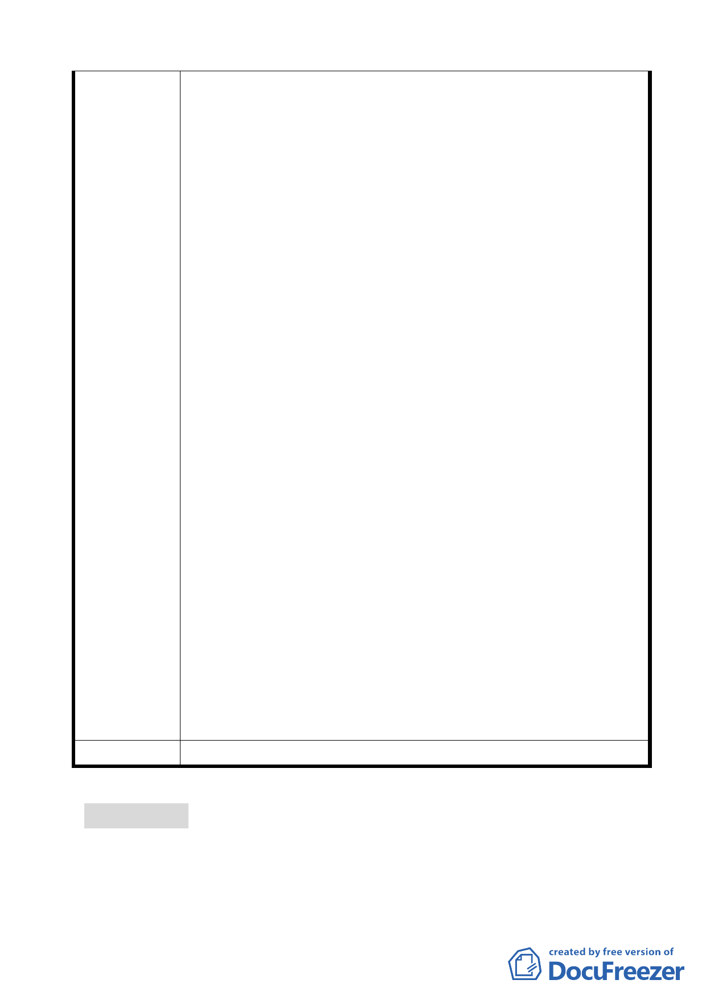

委員會決議
12.5 公尺。
2.查本市都委會 95.9.28 審議通過之臺北市文山區都市計畫
通盤檢討（細部計畫）案內編號細木 8 已拓寬下崙路為 10
公尺。
3.本建議非屬本案計畫範圍，另查該計畫道路南側部分路段
因地形坡度施工不易，業經本市都委會 95.9.28 審議通過
之臺北市文山區都市計畫通盤檢討（細部計畫）案內編號
細木 7 變更為公園用地。
4.經查下崙路側機關用地為臺灣電力公司使用，目前仍有使
用需求。另本案係依據主要計畫內容辦理細部計畫，建議
維持原計畫範圍。
整體開發原則：
一、本意見係屬保護區，不在細部計畫範圍，另查本案主要計畫
書捌、變更回饋內第三點已載明：為保障北基地西北側保護
區內私有土地地主權益，元利建設公司須於本案變更完成
後，依 96 年公告現值協議價購「保護區」內有意願移轉之
其他私有土地(面積約 0.70 公頃)。為確保本承諾之履行，
元利建設公司須提具與該等土地公告現值同額之款項，於主
要計畫公告之日起 10 日內設置信託專戶，為期 1 年（自公
告之日起計算） ，以專款專用方式供前述地主領取。
二、基地週遭舊有建築放寬容積重新建設部分，非屬本案計畫範
圍，建議另循都市更新方式辦理。
三、華興里內住宅區可否變更為商業區部分，非屬本案計畫範
圍，惟依臺北市主要計畫商業區通盤檢討計畫案規定，即使
變更住宅區為商業區，僅有允許使用組別之改變，其容積率
及建蔽率仍需維持原來使用強度。
四、本意見將俟本計畫案審議通過後，整體考量當地實際需要予
以檢討規劃。
五、本計畫區內國小用地及公園用地可依「都市計畫公共設施用
地多目標使用辦法」使用，故本地區現有停車位如經停車管
理處檢討不敷使用，當可配合興建停車場。
依市府（發展局）回應內容辦理。
討論事項 四
案名：變更臺北市辛亥國、高中用地主要計畫案
案情概要說明：
17